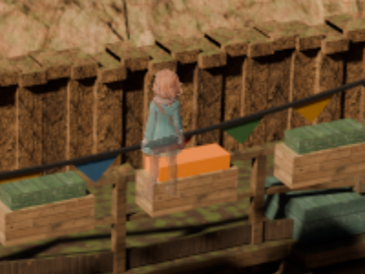
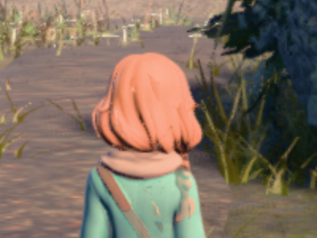
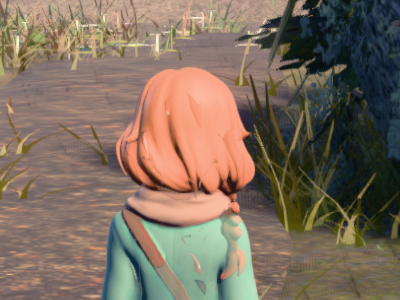
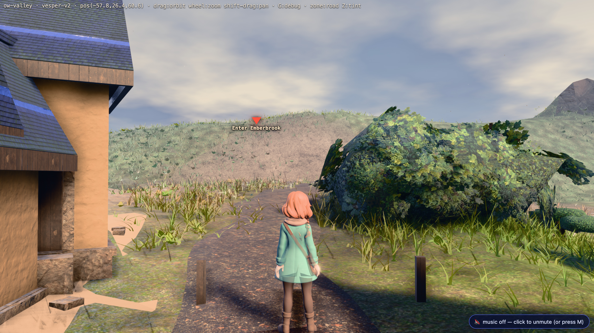

docs/plans/director-slate.md OPEN RESIDUAL 2.)public/play3d.html:163 builds its
renderer as new THREE.WebGLRenderer({antialias:true}); R.setSize(1344,768,false)
and never calls setPixelRatio, so the drawing buffer is 1344×768 forever
and CSS stretches it to the window. On a retina panel that is one rendered pixel per 2×2
device pixels. public/js/battle_stage3d.js:610 does call
renderer.setPixelRatio(Math.min(window.devicePixelRatio||1, 2)) — which is exactly
why the battle screen is sharp and the field is not.
stylized.png and every
per-camera bg.png in public/assets/scenes/*/ measures
2688×1536 — precisely twice the canvas. Today's shipped setting downsamples the
pre-rendered art to half its authored resolution before the player ever sees it. The detail
is on disk and is being thrown away every frame.How these were captured. docs/qa/dpr/dpr_shots.mjs
(through tools/cdp.mjs: OS-assigned port, own profile prefix, reaped).
One headless Chrome on the real GPU (ANGLE Metal Renderer: Apple M1 Max) driven at
Emulation.setDeviceMetricsOverride deviceScaleFactor: 2, css viewport 1344×756, so
every frame below is 2688×1512 real device pixels — what a retina screen actually shows.
The pixel ratio is applied at runtime through the page's own top-level bindings
(R, and PFXRIG.composer for the post-fx path, whose render target is
also built at 1344×768 and has to be resized with it; GTAO's ao_res 0.5 ratio is
preserved). Nothing under public/ was edited — this is a capture, not a fix.
Console clean on every run. Drawing buffers confirmed per shot: 1344×768 · 2016×1152 · 2688×1536.


The nine full frames are shipped as quality-95 4:4:4 JPEG (46 MB of PNG became 14 MB); measured on the crop regions the encode moves acutance by +1.5 to +2.9% uniformly across all three settings, against a dpr 1 -> dpr 2 gap of +62%, so it cannot flatter or flatten the comparison. Every crop is lossless PNG — the crops are the evidence.
Acutance = mean absolute neighbour difference on luminance over the crop. A
proxy for iteration only; the pictures are the verdict.
10 s settled rAF window per setting, headless Chrome on the real GPU
(Apple M1 Max, ANGLE Metal), first 5 frames dropped. docs/qa/dpr/fps.json carries
all three runs.
UNCAP=1)The only run that can tell 61 fps from 119 fps apart: with vsync on, every frame time quantises to 8.3 / 16.6 / 25 ms and the table says nothing about headroom.
| viewpoint | dpr | median ms | p95 ms | median fps | p5 fps | 60 fps? |
|---|---|---|---|---|---|---|
| ow-valley (real-time + GTAO) | 1 | 3.8 | 5.2 | 263 | 192 | yes |
| ow-valley | 1.5 | 7.6 | 8.5 | 132 | 118 | yes |
| ow-valley | 2 | 12.7 | 13.3 | 79 | 75 | yes — 12.7 of the 16.7 ms budget, 24% spare |
| del-cine lockhead (plate) | 1 | 3.5 | 4.7 | 286 | 213 | yes |
| del-cine lockhead | 1.5 | 3.7 | 4.8 | 270 | 208 | yes |
| del-cine lockhead | 2 | 3.8 | 4.9 | 263 | 204 | yes — +9% frame time, i.e. free |
| viewpoint | dpr | median fps | p5 fps | reading |
|---|---|---|---|---|
| ow-valley | 1 | 120 | 118 | locked 120 |
| ow-valley | 1.5 | 120 | 112 | locked 120 |
| ow-valley | 2 | 61 | 39 | drops to a locked 60; ~5% of frames land on a 25 ms hitch |
| del-cine lockhead | 1 / 1.5 / 2 | 120 | 100 | unchanged at every setting |
This is the honest cost to a ProMotion user: the overworld goes from 120 fps to 60 fps. On a 60 Hz TV — the couch-co-op target this game is built for — nothing changes: 12.7 ms fits inside 16.7 ms and the overworld holds 60 at every setting.
Machine state, disclosed: the first run was taken while another lane's
Blender emberbrook --glb export held the CPU and swap sat at 32.8/33.8 GB. It was
re-measured after that export finished (swap 5.5/7.2 GB): the plate rows were identical and
ow-valley dpr 2 moved 65 → 61 median fps, i.e. the load did not change any verdict. Both runs
are in fps.json.
One line of code (R.setPixelRatio(Math.min(devicePixelRatio||1, 2)), plus
building the post-fx render target at the same ratio — the composer's target is hard-coded to
1344×768 and would otherwise silently cap the whole real-time path back to today's resolution).
What it buys: every rendered edge stops being two device pixels wide, and the pre-rendered plates — already authored at 2688×1536 and currently downsampled to half — are shown at their real resolution for the first time. The town scenes gain the most, because the plate is the picture there.
What it costs: nothing measurable in plate scenes (+9% frame time). In the overworld, 3.3× the frame time: 12.7 ms of a 16.7 ms budget on an M1 Max. 60 fps holds; 120 fps does not.
The knob if 2 is too expensive elsewhere: 1.5 costs 7.6 ms in the overworld (locked 120 fps) and buys roughly half the sharpening — clearly better than 1 in every crop above, clearly short of 2. It is a real middle setting, not a compromise that pleases nobody. But it does not line the plates up 1:1, which is where most of the town gain comes from.
Instrument: docs/qa/dpr/dpr_shots.mjs ·
node docs/qa/dpr/dpr_shots.mjs (server on :3000) ·
FPS_ONLY=1 UNCAP=1 node … for the cost table alone.
public/play3d.html now computes
PR = Math.min(window.devicePixelRatio || 1, 2) — the same expression
battle_stage3d.js:701 already used, so the field and the battle finally agree —
and calls R.setPixelRatio(PR) before R.setSize(W,H,false).
?dpr=1 restores the old behaviour; ?dpr=<n> forces any ratio
(clamped 0.5..4). Everything below is measured on the shipped default, not on a runtime patch.The board above predicted one: the composer's render target. There were five, and one of them was not a target at all.
| what | was | now | if it had been missed |
|---|---|---|---|
WebGLRenderTarget handed to EffectComposer | 1344×768 | composer.setSize(W,H) → 2688×1536 | the whole real-time path silently capped back to today's pixels |
GTAOPass(scene,cam,W,H) | 1344×768 | RW,RH (addPass re-sizes it anyway; now it is right before it is) | — |
the ao_res 0.5 override | 0.5 × 1344×768 | 0.5 × effective = 1344×768 at dpr 2 | AO at a quarter of the frame — "half" has to mean half of what is drawn |
UnrealBloomPass resolution | 1344×768 | RW,RH | — |
the FXAA/dither texel uniform | 1/1344, 1/768 | 1/RW, 1/RH | FXAA taps land a full 2 px away: the pass blurs instead of antialiasing. See below. |
SIM.paint()'s gl.readPixels window | indexed with W,H | indexed off R.domElement.width/height | the character-rasterised probe reads a quarter of the frame, in the wrong corner |
EffectComposer's own trap. Handed a render target it takes that target's
pixel size as its CSS size (this._width = renderTarget.width), so
renderer.setPixelRatio alone leaves the whole chain at 1344×768 with no error and
no visual tell — the frame still fills the canvas. The target is therefore built at the CSS
size and resized once with composer.setSize(W,H), which multiplies by the
composer's own ratio and moves rt1, rt2 and every pass together. No colour space was
touched anywhere in this change — r185 renders into a non-XR target in the linear working
space whatever the target declares, and declaring SRGBColorSpace would allocate
SRGB8_ALPHA8 and round-trip the encode away. A resize is a resize.
texel uniform — a ShaderPass has no
setSize, so it kept sampling 1/1344 on a 2688-wide buffer. Measured directly, by
setting that one uniform two ways on the same shipped frame:
| ow-valley crop | texel = 1/1344 (= the board's dpr-2 column) | texel = 1/2688 (shipped) | delta |
|---|---|---|---|
| roofline | 2.23 | 2.40 | +7.6% |
| character silhouette | 5.15 | 5.80 | +12.5% |
?dpr=1 the dpr-1 columnSHIPPED=1 node docs/qa/dpr/dpr_shots.mjs — the same instrument, a
new mode that loads the page once per URL setting and never touches the ratio. Crops are
taken at the same boxes as the board above (recovered from the published crop PNGs by
normalised cross-correlation, ncc ≥ 0.9994). Acutance is the board's own metric and this
implementation reproduces all eight published numbers exactly.
| crop | board dpr 1 | shipped ?dpr=1 | board dpr 2 | shipped DEFAULT |
|---|---|---|---|---|
| ow-valley roofline | 1.48 | 1.47 | 2.24 | 2.40 |
| ow-valley silhouette | 3.18 | 3.19 | 5.16 | 5.80 |
| del-cine lockhead | 4.07 | 4.07 | 6.69 | 6.69 |
| del-cine quay railing | 4.02 | 4.02 | 5.21 | 5.21 |
The two plate rows land exactly on the board's numbers — a plate scene runs the direct path with no composer, so it is deterministic. The two overworld rows land on the dpr-1 column exactly and above the dpr-2 column, by the FXAA texel measured above.
?dpr=1 — the crops (400×300 real device pixels, shown at 2×)
?dpr=1 — the plank wall is mush, the crate slats are gone, the mooring line is a fat soft diagonal
?dpr=1 — grass blades are smears, the distant fence posts are indistinct
?dpr=1 · del-cine lockhead?dpr=1 · del-cine quay-west?dpr=1 · ow-valley ridge
Full frames are quality-95 4:4:4 JPEG, the same encode the board above uses and for the same reason. The crops are lossless PNG and are the evidence; every acutance number in this section is measured on a crop.
Buffer census on the shipped default, per shot, console clean:
drawingBuffer 2688×1536 · composer rt 2688×1536 · GTAO 1344×768 · texel 1/2688,1/1536.
With ?dpr=1: 1344×768 · 1344×768 · 672×384 · 1/1344,1/768.
There is no window-resize handler in play3d.html, and there must not be one.
R.setSize(W,H,false)'s third argument is false and the canvas is laid
out by the stylesheet (canvas{width:100%;height:100%}), so a window resize is a pure
CSS event: the drawing buffer is W×H×PR whatever the window does. That is a claim, so it was
measured — node docs/qa/dpr/dpr_resize.mjs, 16 ok / 0 failed:
== 1 BOOT at the shipped default
{"buf":[2688,1536],"pr":2,"css":[1344,756],"rt":[2688,1536],"rt2":[2688,1536],"ao":[1344,768],"texel":[2688,1536],"rgb":[186,158,142],"magenta":74907}
ok drawing buffer is 2688x1536 at pr 2
ok composer rt1+rt2 follow the ratio
ok GTAO is half of the EFFECTIVE size (ao_res 0.5)
ok the FXAA texel is one device pixel
ok the frame has pixels and the character is rasterised
== 2 CSS RESIZES (updateStyle:false — the buffer must not move)
ok css 800x450: buffer/rt/ao/texel unchanged (css box now 800,450)
ok css 800x450: still drawing (rgb 186,158,142, 74209 char px)
ok css 1920x1080: buffer/rt/ao/texel unchanged (css box now 1920,1080)
ok css 1920x1080: still drawing (rgb 186,158,142, 74163 char px)
ok css 1344x756: buffer/rt/ao/texel unchanged (css box now 1344,756)
ok css 1344x756: still drawing (rgb 186,158,142, 74381 char px)
== 3 COMPOSER RATIO ROUND TRIP 2 -> 1 -> 2
ok pr 1: buf 1344,768 rt 1344,768 ao 672,384 texel 1344,768 all consistent
ok pr 1: still drawing (rgb 186,158,142, 18488 char px)
ok pr 2: buf 2688,1536 rt 2688,1536 ao 1344,768 texel 2688,1536 all consistent
ok pr 2: still drawing (rgb 186,158,142, 75242 char px)
ok console clean across the whole probe
PASS 16 ok, 0 failed
Two things in there are load-bearing beyond the sizes. The grade did not
move: the same probe pixel reads (186,158,142) at every step — a resize is a resize, no
colour space shifted. And the character-pixel count scales as PR² (18,488 → 75,242 =
4.07×), which is the receipt on the SIM.paint readback fix; every threshold on that
count in the repo is a lower bound (>0, >40, >60),
so more pixels can never turn a pass into a fail.
The one gap, reported not fixed. PR is read once at load.
Dragging the window from a 1× monitor to a retina one mid-session leaves the buffer at 1× until
a reload. The reverse (retina → 1×) is harmless: the buffer stays at 2× and CSS downscales.
A matchMedia('(resolution: …)') listener calling composer.setSize would
close it — the chain is already consistent under that call, as §3 above proves — but it is
unmeasured and out of this lane's scope.
Same instrument, same 10 s settled rAF window, vsync on (what the player
feels). docs/qa/dpr/fps-shipped.json.
| viewpoint | URL | median ms | p95 ms | max ms | median fps | reading |
|---|---|---|---|---|---|---|
| ow-valley ridge | default (pr 2) | 15.2 | 17.5 | 18.5 | 65.8 | 60 holds — no 25 ms frame in 781 |
| ow-valley ridge | ?dpr=1 | 8.3 | 9.0 | 10.4 | 120.5 | locked 120 |
| del-cine lockhead | default (pr 2) | 8.3 | 9.0 | 10.4 | 120.5 | unchanged from dpr 1 |
| del-cine lockhead | ?dpr=1 | 8.3 | 9.2 | 10.4 | 120.5 | locked 120 |
Machine state, disclosed: swap 4.6/6.1 GB used, no Blender running, other agent lanes active on the same machine throughout.
| run | median ms | p95 ms | max ms | % frames > 20 ms | % > 24 ms |
|---|---|---|---|---|---|
| ow-valley default, run 1 | 15.9 | 17.9 | 25.3 | 0.30% | 0.15% |
| ow-valley default, run 2 | 16.6 | 26.3 | 34.7 | 21.76% | 18.10% |
SHIPPED=1
capture run above saw zero frames over 20 ms in 781.Where the dpr-2 overworld frame actually goes (vsync OFF, the renderer's
true cost, one page load per variant, ow-valley ridge):
| variant | median ms | p95 ms | attributed |
|---|---|---|---|
| shipped default, dpr 2 | 12.7 | 13.7 | — |
?dpr=1 | 4.0 | 5.6 | the ratio itself: 8.7 ms |
?ao_i=0 (GTAO + the aerial grade gone) | 7.4 | 8.4 | 5.3 ms — 42% of the frame |
?bloom_s=0 | 10.9 | 11.7 | bloom 1.8 ms (14%) |
?pfx_aa=0 | 11.5 | 12.4 | FXAA + dither 1.2 ms |
?ao_res=0.25 (AO at 672×384) | 11.6 | 12.8 | 1.1 ms |
So the mitigation, if one is ever wanted, is named and priced — but it is not needed and is not being shipped. GTAO plus the aerial grade is 5.3 ms of the 12.7 ms overworld frame at dpr 2, and dropping the AO buffer to quarter-res buys 1.1 ms of that for a visible softening of the contact shadows. Running GTAO at half rate (every other frame, reusing the buffer) is the larger prize. Neither is proposed here: the frame already fits 16.7 ms with 24% spare and the hitch turned out to be the machine.
Instruments: SHIPPED=1 node docs/qa/dpr/dpr_shots.mjs ·
node docs/qa/dpr/dpr_resize.mjs · attribution by a scratch variant sweep on the
same tools/cdp.mjs plumbing (numbers above; the script was a one-off and is not
kept). Gates: tools/transition_test.mjs --port=3000 — 162 ok / 6 failed, and the
SAME 6 fail on a pristine HEAD play3d.html served beside the same assets, so they
belong to the battle lanes' in-flight geo+1/tex+1 leak and not to this change.
{kind=link}
{kind=link}
{kind=link}
{kind=link}
{kind=link}
{kind=link}
{kind=link}
{kind=link}
{kind=link}
{kind=link}